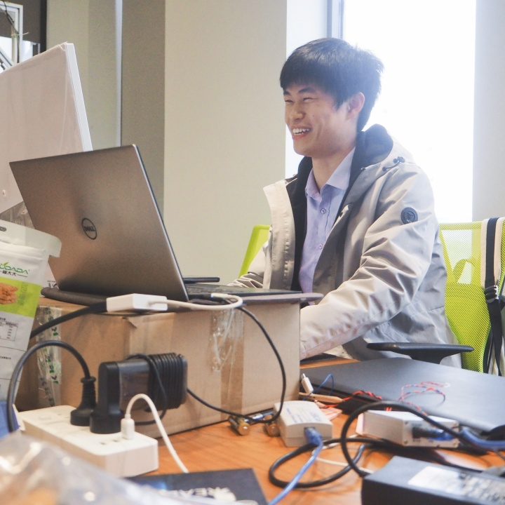

Dynamic Target Encirclement
Cooperative methods for acquiring and maintaining an encirclement formation around a moving target, with emphasis on underactuated vessel dynamics and persistent task completion.

Ph.D. Candidate in Naval Architecture and Ocean Engineering
Harbin Engineering University
Autonomous Surface Vehicles · Multi-Agent Systems · Formation & Encirclement Control · Reinforcement Learning
I am a Ph.D. candidate at Harbin Engineering University. My research focuses on cooperative autonomy for unmanned surface vehicles (USVs), particularly formation control and dynamic target encirclement. I am interested in combining model-based control, multi-agent reinforcement learning, and marine robotics simulation to develop cooperative methods that remain meaningful under realistic vessel dynamics and actuation constraints.
Before my doctoral study, I worked as an R&D engineer at EFORT Intelligent Equipment, where I worked on robotic arm software, ROS, and device drivers. I received my B.S. degree in Automation from Nanjing University.
Formation acquisition and maintenance for underactuated unmanned surface vehicles.
Pursuit, encirclement and persistent containment of moving targets by multiple USVs.
Learning-based cooperative decision making with emphasis on interpretable and reproducible control architectures.
Algorithm development from lightweight planar environments to ROS 2, VRX and WAM-V validation.
Submitted “Order-preserving formation acquisition for dynamic target encirclement by underactuated USVs.”
Research focus extended toward persistent dynamic-target encirclement and multi-USV cooperative pursuit.
Yuntao Zhang, et al. “Order-preserving formation acquisition for dynamic target encirclement by underactuated USVs.” Manuscript under review, 2026.
Yuntao Zhang, Shaocheng Di, Jingzheng Yao. “Multi-USV Cooperative Control Strategy Based on Model Predictive Control with Deep Reinforcement Learning.” ICCES, 2024.
Selected entries are shown here. The publication page will be expanded from verified bibliographic records.
Cooperative methods for acquiring and maintaining an encirclement formation around a moving target, with emphasis on underactuated vessel dynamics and persistent task completion.
Learning-enabled formation control in lightweight, reproducible multi-agent simulation environments, including teacher-guided and residual-learning ideas.
Engineering validation of cooperative USV algorithms using the VRX simulation ecosystem and WAM-V platform.
Ph.D. Candidate, Naval Architecture and Ocean Engineering
R&D Engineer — robotic arm software, ROS and device drivers
B.S. in Automation
For research-related correspondence, please contact me at yuntaochn@gmail.com.